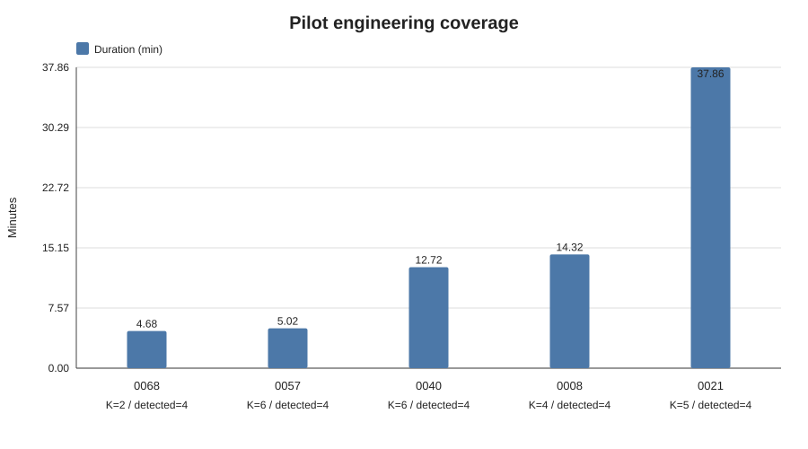
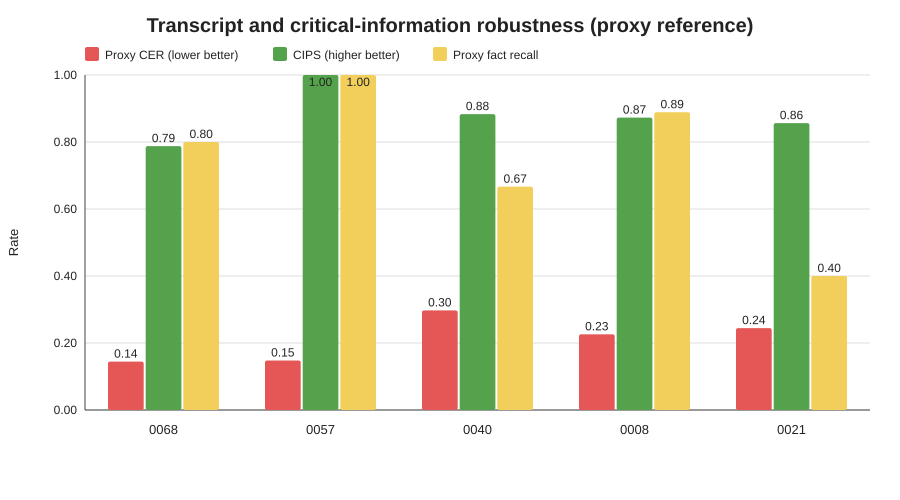
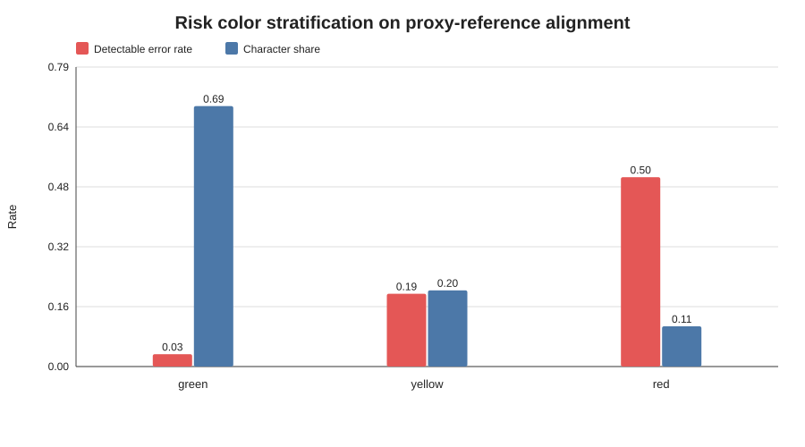
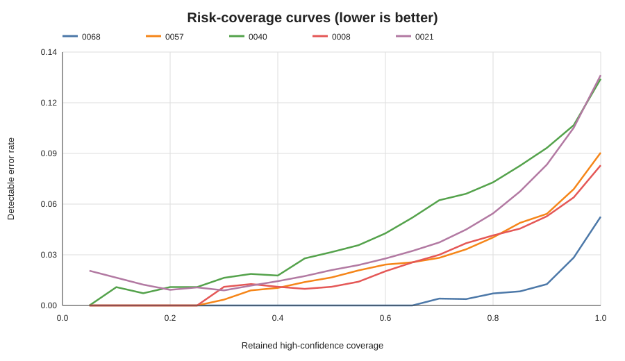
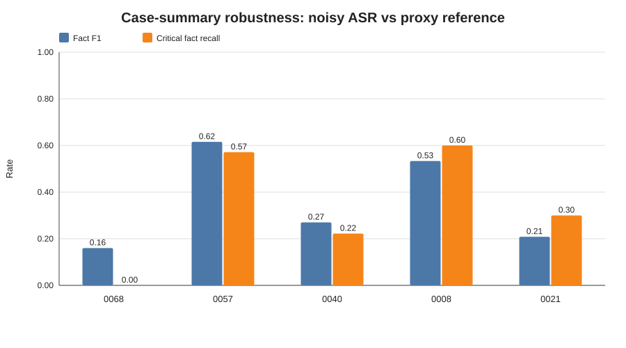

中文 5 例 ASR 代理参考鲁棒性 pilot
研究输出，不构成临床建议。 质量指标使用未听音频的 LLM 多路自动转录代理参考，不是人工 clean/reference， 也不能用于正式质量结论。
工程覆盖：5 例， 74.60 分钟， 152 个 ASR 窗口， 9458 个审阅单元， diarization 5/5。
Proxy CER21.2%
CIPS88.0%
代理事实文本召回75.1%
黄+红可检测错误召回79.5%
审阅字符比例28.8%
Proxy word ECE0.0510
声学 speaker 映射覆盖91.0%
病例摘要事实 F135.7%
逐例指标
| case | min | K | CER | CIPS | fact recall | review load | error recall | speaker map | summary F1 |
|---|---|---|---|---|---|---|---|---|---|
| case_0068 | 4.7 | 2 | 14.4% | 78.8% | 80.0% | 16.0% | 86.5% | 93.9% | 16.0% |
| case_0057 | 5.0 | 6 | 14.8% | 100.0% | 100.0% | 24.0% | 70.1% | 86.3% | 61.5% |
| case_0040 | 12.7 | 6 | 29.7% | 88.3% | 66.7% | 40.4% | 81.3% | 91.6% | 27.0% |
| case_0008 | 14.3 | 4 | 22.6% | 87.3% | 88.9% | 33.4% | 78.7% | 91.1% | 53.3% |
| case_0021 | 37.9 | 5 | 24.5% | 85.6% | 40.0% | 30.4% | 81.1% | 91.9% | 20.8% |
图表




